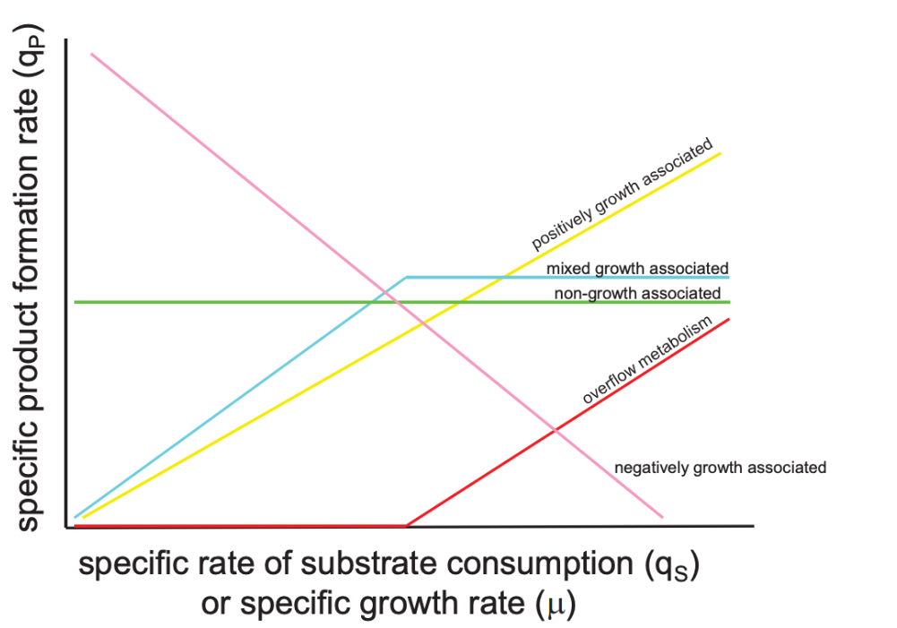

Describing the growth of cells in bioreactors
A bioreactor is like your dream house that allows you to thrive in every way possible. A $3,000,000 interior design with an amazing mattress, indoor pool, a gym, elevator and all the other things that put you at the happiest and most productive state.
This involves maintaining pH, temperature, nutrient supply and ensuring sufficient gas supply.
There are generally two types of techniques used in bioreactors: batch and fed-batch.
The batch process is when all nutrients are provided initially into the culture. The cells are put into this culture and proliferate until one of the nutrients (limiting nutrient) runs out.
Fed-batch on the other hand is a system where one or more nutrients (called substrates) are added to the system throughout the culture to prevent nutrient deprivation.
Now comes all the mathematical modelling of the relationships between the variables within all of this.
Cell growth rate
The growth rate of a population is proportional to the number of organisms present in that population. If each member of the population also has an approximately equal mass, then the growth rate is proportional to the mass concentration of the members.
X = cell mass, or otherwise biomass concentration
$$\frac{d X}{d t} \propto X$$
The specific growth rate of a cell population is described using "μ". μ can be positive, representing growth, or negative, representing death.
- An empirical model to describe cell growth looks something like this: μ = f (S, P, I, X, pH, T, osmotic pressure), where:- f = function of
- S = substrate concentration
- P = product concentration
- I = substrate inhibitor concentration
- T = temperature
Types of models to describe specific growth rate:
1. Monod
Monod or some variation of it is the most common model used in batch bioreactors.
$$\mu=\frac{\mu_{\mathrm{MAX}} S}{\mathrm{~K}_{\mathrm{S}}+\mathrm{S}}$$
Where:
- Ks = "substrate affinity constant"
- μ≈ μMAX
2. Monod with multiple substrates:
$$\mu=\frac{\mu_{\mathrm{MAX}} S}{\mathrm{~K}_{\mathrm{S}}+\mathrm{S}} \frac{\mathrm{N}}{\mathrm{K}_{\mathrm{N}}+\mathrm{N}}$$
N represents nitrogen, a second substrate in the system.
3. Monod-like noncompetitive inhibition
$$\mu=\frac{\mu_{\mathrm{MAX}} \mathrm{S}}{\mathrm{K}_{\mathrm{S}}+\mathrm{S}} \frac{\mathrm{K}_{\mathrm{I}}}{\mathrm{K}_{\mathrm{I}}+\mathrm{I}}$$
KI is the inhibition constant
This model describes a system that is inhibited by the substrate.
4. Monod-like Noncompetitive Product Inhibition
$$\mu=\frac{\mu_{\mathrm{MAX}} \mathrm{S}}{\mathrm{K}_{\mathrm{S}}+\mathrm{S}} \frac{\mathrm{K}_{\mathrm{P}}}{\mathrm{K}_{\mathrm{P}}+\mathrm{P}}$$
KP is the product inhibition constant
5. Contois
This model is used to predict the proportionality between μ and 1/X at a
low S value. It's also used to predict μ --> 0 at a high X value.
$$\mu=\frac{\mu_{\mathrm{MAX}} S}{\mathrm{~K}_{\mathrm{SX}} \mathrm{X}+\mathrm{S}}$$
Equations for calculating substrate utilization
There are three aspects to determining the utilization of substrate.
1. Maintenance
Every organism converts a substrate into energy to maintain a standard of living, which is called its maintenance requirement.
The rate of substrate that is consumed in order to maintain the cells is proportional to the cell mass.
$$-\left.\frac{\mathrm{dS}}{\mathrm{dt}}\right|_{\text {Maintenance }} \propto \mathrm{X}$$
OR
$$-\left.\frac{\mathrm{dS}}{\mathrm{dt}}\right|_{\text {Maintenance }}=\mathrm{m}_{\mathrm{S}} \mathrm{X}$$
mS is the maintenance coefficient. m is measured in g of substrate/g of cell.
The higher this coefficient, the more substrate goes towards maintaining the culture. Since this does not contribute to product formation, it's considered an overhead cost. This coefficient is defined for every substrate the cell needs under non-growth conditions. For example, carbon (mS) and oxygen (mO).
$$\begin{array}{llll} {\text { Organism }} & \text { substrate } & {\mathrm{m}_{\mathrm{s}}} & \mathrm{m}_{\mathrm{o}} \\ \hline \text { Aerobacter aerogenes } & \text { glucose } & 0.054 \mathrm{~g} / \mathrm{gh} & 0.054 \mathrm{~g} / \mathrm{gh} \\ \text { A. aerogenes } & \text { glycerol } & 0.096 & 0.109 \\ \text { A. aerogenes } & \text { citrate } & 0.058 & 0.048 \\ \text { Penicillium chrysogenum } & \text { glucose } & 0.022 & 0.024 \end{array}$$
2. Cell Mass
Substrate can also be used for the production of new cellular components/cells, which means it is proportional to the rate of new cells produced.
$$-\left.\frac{\mathrm{dS}}{\mathrm{dt}}\right|_{\text {Cells }} \propto \frac{\mathrm{dX}}{\mathrm{dt}}$$
Also written as:
$$-\left.Y_{X / S} \frac{d S}{d t}\right|_{\text {Cells }}=\frac{d X}{d t}$$
or as:
$$-\left.\frac{\mathrm{dS}}{\mathrm{dt}}\right|_{\text {Cells }}=\frac{1}{\mathrm{Y}_{\mathrm{X} / \mathrm{S}}} \frac{\mathrm{dX}}{\mathrm{dt}}$$
Where YX/S is the cell yield coefficient. This can be written for any substrate:
$$$Y_{X / S}=\frac{g \text { cell formed }}{g \text { substrate consumed }}$$$
For example:
$$\begin{array}{llll} \text { Organism } & \text { substrate } & \mathbf{Y}_{\mathrm{X/S}} & \mathbf{Y}_{\text {S/O }} \\ \hline \text { Candida utilis } & \text { glucose } & 0.51 \mathrm{~g} / \mathrm{g} & 1.30 \mathrm{~g} / \mathrm{g} \\ \text { Candida utilis } & \text { acetic acid } & 0.36 & 0.62 \\ \text { Candida utilis } & \text { ethanol } & 0.68 & 0.58 \end{array}$$
3. Product
Substrate can also be used as an input for the synthesis of products.
The volumeric rate of product formation:
$$=Q_P=\frac{d P}{d t}$$
The specific rate of product formation:
$$=\mathrm{q}_{\mathrm{P}}=\frac{1}{\mathrm{X}} \frac{\mathrm{dP}}{\mathrm{dt}}$$
Associations between specific product formation rate ( qP ) and specific rate of substrate consumption ( qS ) or specific growth rate (μ).
Some of the relationships between product formation and substrate utilization rates are:
Growth association
$$\begin{aligned} &-\left.\frac{\mathrm{dS}}{\mathrm{dt}}\right|_{\text {Products }} \propto \frac{\mathrm{dP}}{\mathrm{dt}} \\ &-\left.\mathrm{Y}_{\mathrm{P} / \mathrm{S}} \frac{\mathrm{dS}}{\mathrm{dt}}\right|_{\text {Products }}=\frac{\mathrm{dP}}{\mathrm{dt}} \\ &-\left.\frac{\mathrm{dS}}{\mathrm{dt}}\right|_{\text {Products }}=\frac{1}{\mathrm{Y}_{\mathrm{P} / \mathrm{S}}} \frac{\mathrm{dP}}{\mathrm{dt}} \end{aligned}$$
Where YP/S is the product yield coefficient: the amount of product produced for a specific substrate.
Growth associated means the rate of product formation is directly proportional to growth rate of the cells.
$$\frac{\mathrm{dP}}{\mathrm{dt}} \propto \frac{\mathrm{dX}}{\mathrm{dt}}$$
OR
$$\frac{d P}{d t}=Y_{P / X} \frac{d X}{d t}$$
Where YP/X is the specific product yield coefficient.
The equation for growth associated products is:
$$\begin{aligned} &Q_P=Y_{P / X} \mu X \\ &q_P=Y_{P / X} \mu \end{aligned}$$
Non-growth association
In this case,e the specific rate of product formation is a constant: beta.
$$\begin{aligned} &\mathrm{Q}_{\mathrm{P}}=\beta \\ &\mathrm{Q}_{\mathrm{P}}=\beta \mathrm{X} \end{aligned}$$
Mixed-growth association
$$\begin{aligned} &\mathrm{q}_{\mathrm{P}}=\alpha \mu+\beta \\ &\mathrm{Q}_{\mathrm{P}}=\alpha \mu \mathrm{X}+\beta \mathrm{X} \end{aligned}$$
This is also called Luedeking-Piret Equation, where the product is partially associated, but also includes a constant.
4. Total substrate utilization.
Therefore, total substrate utilization can be written as:
$$\begin{gathered} -\left.\frac{\mathrm{dS}}{\mathrm{dt}}\right|_{\text {Total }}=-\left.\frac{\mathrm{dS}}{\mathrm{dt}}\right|_{\text {Maint }}-\left.\frac{\mathrm{dS}}{\mathrm{dt}}\right|_{\text {Cells }}-\left.\frac{\mathrm{dS}}{\mathrm{dt}}\right|_{\text {Products }} \\ -\mathrm{r}_{\mathrm{S}}=-\left.\frac{\mathrm{dS}}{\mathrm{dt}}\right|_{\text {Total }}=\mathrm{m}_{\mathrm{S}} \mathrm{X}+\frac{\mu \mathrm{X}}{\mathrm{Y}_{\mathrm{X} / \mathrm{S}}}+\frac{\mathrm{Q}_{\mathrm{P}}}{\mathrm{Y}_{\mathrm{P} / \mathrm{S}}}=\mathrm{Q}_{\mathrm{S}} \\ \mathrm{q}_{\mathrm{S}}=\frac{\mathrm{Q}_{\mathrm{S}}}{\mathrm{X}} \end{gathered}$$